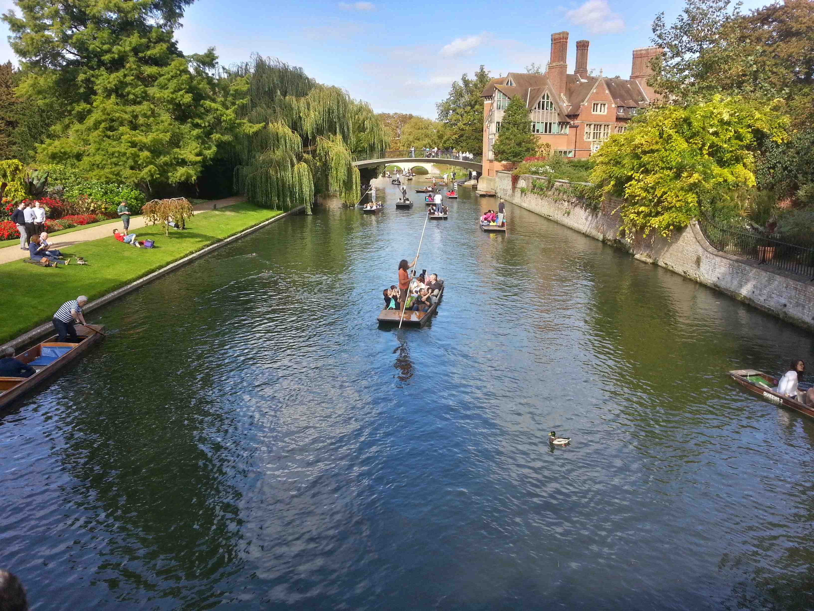
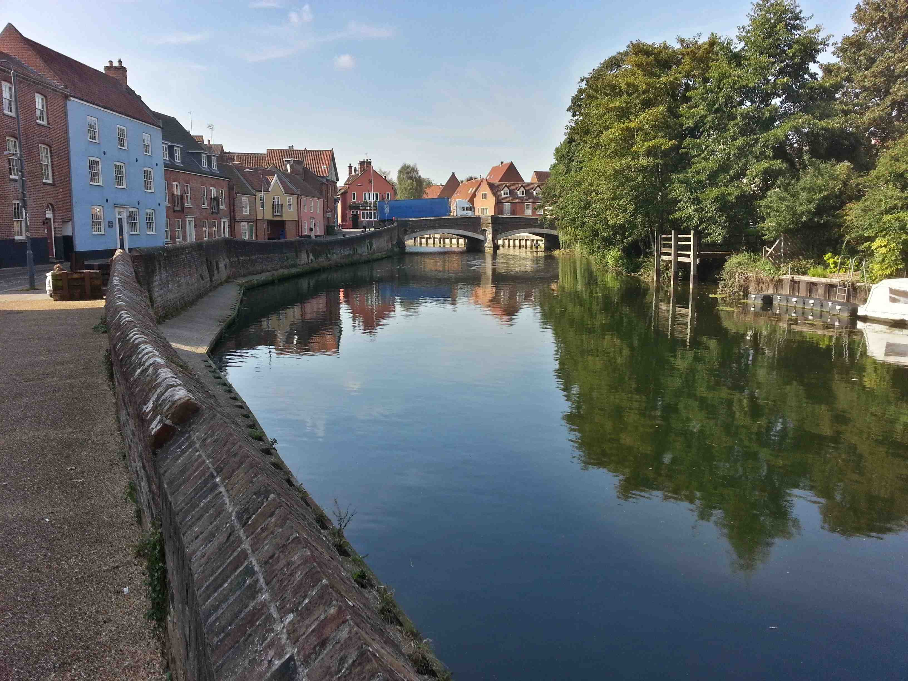
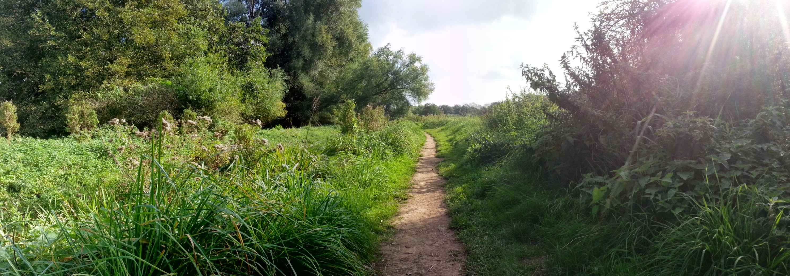
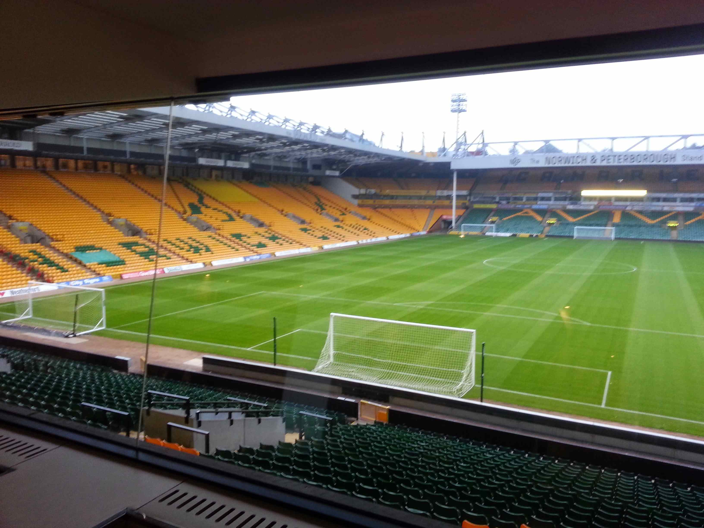
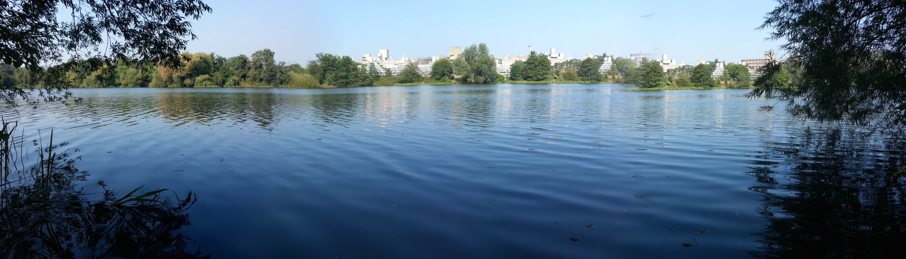
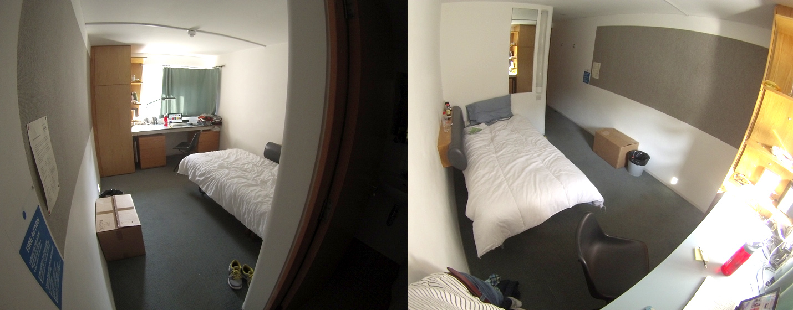

STUDY ABROAD
Norwich, Great Britain
Norwich, Great Britain
Today I bought my train tickets to London and Paris. My Contemporary Gallery and Museum Studies class is taking a day trip to visit the Tate Modern and White Chapel Gallery so I decided to take advantage of the Eurostar and the fact of being in London and head across the pond. I was able to get a decent deal from Eurostar by booking train and hotel together for cheap. Three nights in a decent hotel plus roundtrip train tickets cost £272 or roughly $440. Once my class is finished with the galleries I have all afternoon and night to see London because I’m spending the night there and heading out in the morning. I’ll spend Thursday, Friday, Saturday, and Sunday in Paris and return Sunday for classes Monday morning.
“You okay?”, a common phrase used as a greeting by British natives. It basically means the same in America as “How are you doing?” which it is acceptable to say “Fine, thanks, you?”. After you hear it a few times it comes natural but for the first week or so it feels weird being asked that.
You know how people always ask “If you could change one thing in the world what would it be?”. After living in England, I would have to say the way people walk on the sidewalk here. It is literally anarchy. Do you walk on the right, the left, in the middle or both??? The answer is all of the above. People basically walk in every direction, right or not. Most of the time, it ends in an awkward dance of trying to read the other person's actions and being polite.
English people say, “Cheers” instead of goodbyes. So when you are purchasing an item say at the store the cashier will most likely say “Cheers" instead of “Thanks, have a good day”.
There is a coin or card for everything. My pockets are usually weighted down with £1 and £2 coins. On top of the basic pound coins, you get denominations in 10 all the way to 1p. Needless to say, you end up with tons of change.
It is customary to thank the bus driver when you exit the bus whether it be a private coach or public transportation. Also, it is socially acceptable to sit on the second level as a first choice or if you prefer the bottom, sit at least two or three rows from the stairs. This leaves room for older people to have the closest seats.
Partying usually goes on into the next day, especially on Friday night. For instance, during week 2 of Freshers events a Prom took place. This consisted of DJs and a carnival. Most of the partying ended around 3-5am. If you like quite time, Sunday morning is great. Everyone is usually hungover and don’t get out of bed until later in the day.
Royal Mail takes forever. It literally puts the snail in mail.

Traveling across England is pretty easy and most often pretty cheap. My trip to Cambridge cost £10 and included a coach ride to and from campus along with a tour guide for two hours. I was able to see Cambridge University, the 2nd best school in the world next to MIT. After seeing the campus, we headed towards King's College Chapel and the city market. Later in the day I went into King’s College Chapel to see its gothic vaulted ceiling and its bridge over the river Cam. It cost £5 to enter. On my way around I stopped at the garden as well which gave a better view of the river and bank-side access. For the remainder of the afternoon I had lunch, looked through the city market, saw a terribly boring street performer on a unicycle, bought a Fitzbillies Chelsea bun (£1.80-take away), got a Latte and sat by the river to watch the punts (wooden paddle boats) go by.
For those of you who can’t see my photos on Facebook I have uploaded most of them to Flickr as well at https://www.flickr.com/photos/tsanguinette/.
In the first couple days and even weeks I’m still collecting kitchenware and school supplies. If you take the 25 bus from campus to the city centre it will take you straight to Wilko. Wilko is a bit like Target but smaller. They have tons of cheap items to pick from whether it be bedding, kitchenware or food. I would highly recommend going here before purchasing anything from the campus store. You will save a ton of money this way, especially if you get a bus pass.
Today I had my two other classes. The museum and gallery studies class started at 10:00am and went for a solid two. We went over class expectations along with coursework details. Later in the class we watched different clips of galleries/museums in pop culture movies and had a discussion on the different views, perspectives and ideas shown in those clips. Throughout the remainder of the module, we started looking towards artist-lead and society critique of modern art galleries.
Wednesdays are a bit busy because both modules are back to back. One ends at 12:00pm and the other starts at that time. The walk to class is a decent amount too. The art history module is near the edge of campus and the plant biology class is near the center, a good 5-7 minute walk. Plus once you enter the science building you have to climb 3 levels worth of steps just to get to the lecture hall. Needless to say, I showed up to the bio module about 10 minutes late and heavily out of breathe. I will definitely have to see if I can leave my art history a few minutes early so I’m not late again.

Today I took the bus to the city centre. It's great because the bus stop that goes straight to the city stops close to my flat. It is literally a minute walk from my room. A roundtrip or “return” ticket cost £4.20. It took me about 4 hours of walking to cover just about everything in the city. I came across American food such as KFC, Subway, McDonalds, Starbucks and Pizza Hut. The American restaurants here are much nicer and more updated than at home. Of course, there was a large amount of churches, shops, and food.
Side note: If you need houseware go to Clas Ohlson in the Intu Chapelfield Mall. It is basically a mall version of IKEA and has a decent amount of cheap items.
The first day of classes went well. I only had one class today and it was my Material Studies class. It seems to be centered around anthropology and archeology which I have no knowledge in at all. I spoke with the professor after class and he said it was possible to get through and he didn’t expect too much because of my background and study abroad situation. The class itself is very small, only about 11 students. Class is held in SCVA which is really incredible. During my self-introduction to the class, I told them about my major and minor. They looked a bit confused and shocked because in England you usually only pursue one course of study which takes 3 years.
Side note: classes or “modules” for art history are 2 hours long with a ten-minute break. It is also acceptable for the teacher to show up 10 to 15 minutes late. Tomorrow I have the day off and then only two classes on Wednesday.

Today I figured out the laundry situation. UEA uses an online top-up card system for washing / drying. The top-up card costs £3, exact change, and can be purchased in the laundry room. Once I purchased a card I had to load it with money online. Once you top-up online you receive a code in an e-mail. You insert your card in the laundry room card activator and type the number in. This activates your top-up purchase. Each wash was £2.40 and £1.60 per dry which took about 1 hour and 20 minutes to finish both wash and dry.
After doing laundry, I took a tour of the art school’s HUB and main office area. They explained what kind of services they offered, helped with timetable questions and showed the study abroad area.
From about midday into the evening all of the home students arrived. It was interesting to see and meet them. So far in my flat, there is only one home student and I met him the day he arrived.
History of Norwich and Student Union presentations in the morning. I looked through the campus bookstore and found some postcards and cards to send back home. The postcards were a bit expensive at 70p each and cards were about £2.50 each.
The weather today was the coolest since I’ve been here. It reached about 16 and had significant cloud cover. I had some free time after the presentations so I was able to write mail, cook dinner and purchase a pot/spoon for cooking pasta.
Finally, I ordered a 16-25 railcard and was able to add an alternate address (my UK address) to my American Express Delta card so I am able to make online purchases in the UK and have them delivered to my flat. There was a payment problem when I had groceries delivered so this should resolve further conflicts.

Today was more lecture/informational related. Welcome lectures started at 9:00 and were broken up into different sections. At about 15:00 only the study abroad students went to Norwich city and took part in a scavenger hunt. We were finally able to walk around the city and see some of the sites. Upon completing the scavenger hunt, we had a small reception in a medieval church where we were able to meet more international students.
Later in the evening around 18:30 we made our way over to Norwich City Football City Centre where the university had a reception for all international students. Lord Mayor gave a short introduction along with others. Finally around 21:00 coaches took us back to campus.

Day 2 was pretty nice. I started out with a coffee (latte £1.80) and a cup of fruit (£2.50) from Café Direct, the main coffee shop next to the store. We met at 9:30 in the campus center for a campus tour. On the tour, I meet a small group of people which I ended up having lunch with and then eventually dinner as well. They were from Germany, Slovenia, Canada and some middle eastern country. It was hard to understand the middle eastern guy. After the tour, we grabbed lunch and talked for a while. Meeting friends on tours can be awkward especially if you are an international students. Just look at the person next to you and ask them their name. It will eventually lead to a familiar face or lunch/dinner date.
In the time, I had between tours I went for a walk around the campus’s lake. It was classic countryside territory and definitely a beautiful place to see.
Later in the afternoon three of us ended up on the same bus for the Norwich city tour. The city tour took about an hour and a half. We had dinner on campus at the Campus Kitchen where I had a burger and fries. Needless to say, it wasn’t even close to American burgers. Finally towards the end of the evening it was late so we all turned in and went back to our rooms.
There is a bunch of people from the U.S. here this semester. I’ve met people from Massachusetts, California, Texas and even Missouri — about five people are from St. Louis. Of course, I have also met tons of people from other countries. Some include Kenya, Mongolia, Brasil, Japan, Canada, Germany, and Slovenia.
Upon returning from dinner, I purchased groceries from ASDA. The first couple days can be a bit rough food wise so you will definitely want to order groceries online and have them delivered to your flat once you get connected to the internet. Note that the campus mail room doesn’t accept perishable items so do include your flat name on your account. You will also need a local phone number so the best way to take care of this is by using the GiffGaff sim card you receive in your room on arrival day. If you are outside of the main campus you can order a free sim from the GiffGaff website. The service is cheap and will easy to setup.
Side note: English people love to queue (wait in line). You will queue for everything.

During my first day, I checked in and registered. UEA explained accommodation details and gave me keys. Someone also reviewed my visa and passport information because the school has sponsored me for study. After registration, I was taken to my room which is only a few steps across from the Sainsbury Centre. I unpacked, took a 3-hour nap then grabbed food from the campus shop. I also purchased a pay as you go sim through GiffGaff. It was super cheap at £10 per month with 1GB of 4G/3G data, unlimited text and 500 minutes.
The travel to England was very draining. I had three flights and every single one of them were delayed. Thankfully I made all my connecting flights with no rebooking. Sometimes you see people running from flight to flight, that was me in Atlanta. I ran from terminal C55 to the airport train and then to the international terminal. Everyone had boarded the plane, but I made it about 10 minutes before they closed the door.
The flight to Amsterdam was also an interesting experience as well. Delta’s 767-300 planes are massive. Its in-flight entertainment system was a nice touch although the old lady sitting next to me kept asking for help. The system had a touch screen built into the seat in front of you with tons of movies, games, TV shows and even a flight tracker where you could see a map of your flight path and plane details. As part of international flights Delta serves dinner (usually) and breakfast along with any other drink/snacks you want. For dinner, I had a grilled chicken salad with fruit, roll, and cookie. It was actually pretty good and filling for an in-flight meal, however, the breakfast was disgusting. It consisted of a lukewarm “egg sandwich” aka a severely disgusting roll with a sponge-like patty of egg along with yogurt. Sleeping was a bit iffy as I didn’t get much sleep, oh and not to mention the bratty child who kept having outbursts of high-pitched yells kept most passengers up.
Schiphol airport was interesting because of its size and complexity, although it can be a bit confusing as far as security screening and gate access. Perhaps it is not as confusing for larger flights but I took a KLM city hopper to Norwich so the plane was smaller and had a remote boarding location. To board the plane passengers waited at a gate that is really a bus stop. Once your ticket is scanned you board a bus which then transports you to the tarmac. From the gate to the plane it takes about 5 minutes. You literally walk on the plane from the tarmac. It was surrounded by other smaller planes much like sailboats sit in the wave break zone of lake Michigan in Chicago. The extremely short flight of 30 minutes was okay. KLM served a prepackaged cup of water less than a couple ounces along with a biscuit which was great. It tasted like snickerdoodle cookies! Oh, for your information, there is a wind farm in the middle of the sea between the Netherlands and England. It was kind of unexpected surrounded by ships and water.
After arriving in Norwich, I made it through passport control. I was asked some rather awkward questions but nonetheless they stamped my passport with a student visitor seal.